Chapter 6 When Will I Be Done With This Project?
6.1 Inconsistency of Measurement
We have talked a bit about how it’s important to properly operationalize what we measure. Not to add more to your plate, but even if we get the right measurement, and do the correct statistics, when you’re studying people, the reliability of measurement also matters. This lesson will highlight both a software engineering question (predicting when a project will be done), and how to think of reliability of what you measure. After walking through the Need for Sleep lesson, you’re surely realizing how careful we have to be with our experimental setup. You can imagine that the best way to know if something is “true” is to test a concept over and over again, under lots of different circumstances, and see if your results hold true. Imagine testing participants on multiple occasions, trying to not only test your hypothesis, but seeing how steady that hypothesis holds over time. All of that is ideal, of course. Most of the time, there is limited resources, limited participants, limited time, and a rush towards a deadline. But convenience should never get in the way of good science. So let’s take a look at how unreliable measurements might be.
In the following study, Inconsistency of expert judgment-based estimates of software development effort, expert participants rated how much effort (work-hours) they estimate for sixty software projects. They unknowingly rated six of those projects twice, helping to answer questions about the reliability of professional judgments about software effort estimation. The paper tries to answer the following research question:
How consistent are software professionals’ expert judgment-based effort estimates?
This lesson is going to explore how we estimate how long software will take to finish (or your homework, for that matter). We will explore several statistical and scientific concepts:
- reliability of measurement
- generalization of results
- features that could matter
- data wrangling
- accuracy
6.2 Load Your Libraries
source("data/ESEUR_config.r") # FIXME
library("plyr")
library("dplyr")
library("reshape2")
library("ggplot2")6.3 Data Wrangling
Whatever your problem, you will come across the need to wrangle your data into different shapes. At first, it can seem either pointless or too complicated to be worth it. I remember first hearing the terms “melt” or “longform data” and wondering if I could just avoid ever doing that. Turns out, everyone was right and it’s way better to wrap your head around a good melt command and move on with your life. Let’s get a quick briefing on long form,wide form, reshaping, and melting data.
6.3.1 Original Data
incon=read.csv(paste0(ESEUR_dir, "data/estimation/inconsistency_est.csv.xz"), as.is=TRUE)6.3.2 Wide Form
This data format “stretches” the results by each Task across several columns. Each task has its own column. I’ve even demonstrated the even wider version of the data, where the Order variable is also “stretched” across the columns, instead of being in long form. What we are left with is simply the Subject ID number and then a separate column for each subject’s ratings for each Task in each Order.
head(incon)## Order Subject T1 T2 T3 T4 T5 T6
## 1 1 1 32 8.0 32 4.0 16 6
## 2 2 1 30 8.0 28 4.0 40 10
## 3 1 2 6 6.0 7 1.0 10 4
## 4 2 2 13 2.5 11 2.5 15 3
## 5 1 3 5 5.0 4 2.0 6 1
## 6 2 3 5 2.0 5 2.0 16 3wider <-reshape(incon, direction="wide", idvar=c("Subject"), timevar="Order")
head(wider)## Subject T1.1 T2.1 T3.1 T4.1 T5.1 T6.1 T1.2 T2.2 T3.2 T4.2 T5.2 T6.2
## 1 1 32.0 8 32 4 16 6.0 30 8.0 28 4.0 40.0 10.0
## 3 2 6.0 6 7 1 10 4.0 13 2.5 11 2.5 15.0 3.0
## 5 3 5.0 5 4 2 6 1.0 5 2.0 5 2.0 16.0 3.0
## 7 4 7.5 5 7 2 7 1.5 7 6.0 4 4.0 5.5 1.5
## 9 5 8.0 4 16 3 80 1.0 25 6.0 8 2.0 30.0 1.0
## 11 6 7.0 6 7 2 40 3.0 20 8.0 10 1.0 40.0 1.06.3.3 Melt
Personally, I never understood the “melt” terminology but basically we will take the wide form data and transform it to long form. I guess it kind of goes from being stretched to dripping down and melting together? Whatever helps you to think about it, here’s an example of “melting” down tasks.
tasks=melt(incon, measure.vars=paste0("T", 1:6),
variable.name="Task", value.name="Estimate")6.3.4 Long Form
Here you can see that tasks has been melted down to now represent each Task (T1, T2, T3..) as a factor of Task in one column. You can also see a difference with Subject, as it has to be recorded twice per column, in order to demonstrate the repeated measure for each task.
head(tasks)## Order Subject Task Estimate
## 1 1 1 T1 32
## 2 2 1 T1 30
## 3 1 2 T1 6
## 4 2 2 T1 13
## 5 1 3 T1 5
## 6 2 3 T1 56.3.5 Reshape
Yet another reshape will allow us to manipulate the data by whichever variable we choose. In this case, I would like to plot the First Estimate by the Second Estimate. To this day, it still helps me to draw out the exact kind of dataframe I need in order to make the comparisons or plots I have visualized in my mind. I realized that I had Order recorded, but those two groups of Estimates were not easily comparable. I needed to manipulate my data further to have a mix of long and wide form to be the most amenable for ggplot.
# reshape data
tasks <-reshape(tasks, direction="wide", idvar=c("Subject", "Task"), timevar="Order")
head(tasks)## Subject Task Estimate.1 Estimate.2
## 1 1 T1 32.0 30
## 3 2 T1 6.0 13
## 5 3 T1 5.0 5
## 7 4 T1 7.5 7
## 9 5 T1 8.0 25
## 11 6 T1 7.0 20I’m truly not exaggerating when I once tried to avoid any and all reshaping/reformatting of my data. It was a difficult concept to wrap my head around, and I hoped I could just format my data in one way and stick to it. Turns out that it’s much easier to commit to learning these tools and apply them to make your life easier when answering statistical questions. I’m also not exaggerating when I say I’ve come across almost every configuration of data you can imagine; long form, wide form, half-melted-who-knows-what form. If I can swallow my pride and learn a melt command, I believe you can too.
6.3.6 Log Plot
Here we include a reference line. This is the y==x line, and it is describing a hypothetical scenario where each participant perfectly reliably rates each software task. On the x axis we have their first estimate for each task, and on the y axis we see the second estimate. If they were perfectly reliable, the y==x line would represent the data. If they are not perfectly reliable, the points will deviate from the y==x line. The following plot also uses log scale, a common technique to visualize data with a spread that would otherwise be difficult to interpret. Try it without the log transformation and see which plot is more interpretable…
plt = ggplot(tasks,aes(Estimate.1,Estimate.2,color=Task))+
geom_point()+
theme_bw()+
ggtitle("Repeated estimates of effort for six software tasks")+
xlab("First Estimate")+
ylab("Second Estimate")+
geom_abline(slope=1,linetype="dashed")+
scale_x_continuous(trans='log10') +
scale_y_continuous(trans='log10')
plt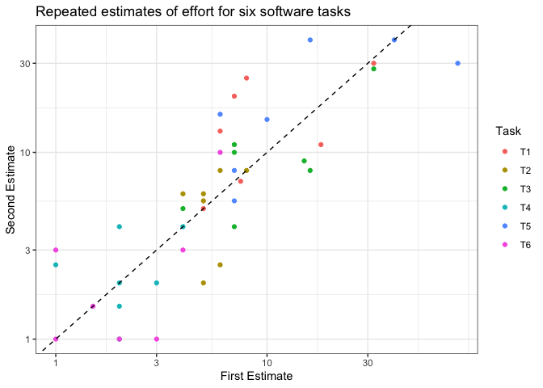
shapiro.test(tasks$Estimate.1)##
## Shapiro-Wilk normality test
##
## data: tasks$Estimate.1
## W = 0.55771, p-value = 4.725e-10shapiro.test(tasks$Estimate.2)##
## Shapiro-Wilk normality test
##
## data: tasks$Estimate.2
## W = 0.77446, p-value = 1.32e-06plt = ggplot(tasks,aes(Estimate.1,Estimate.2,color=Task))+
geom_point()+
theme_bw()+
ggtitle("Repeated estimates of effort for six software tasks")+
xlab("First Estimate")+
ylab("Second Estimate")+
geom_abline(slope=1,linetype="dashed")+
scale_x_continuous(trans='log10') +
scale_y_continuous(trans='log10')
plt6.4 Correlation (Misleading)
We have explored the idea of looking at the strength of a linear relationship through (glossary.html#correlation). It might seem intuitive that correlation between the First Estimate and Second Estimate could tell us something about rater accuracy. Let’s look into this correlation. First of all, we test the normality of our responses. Neither of the distributions are normally distributed, meaning that we need to employ a rank-based (nonparametric) method when looking at correlation. Here we use a method referring to Kendall’s Tau. Our result is .69 which indicates a moderately strong correlation between the first and second estimate. So, they must be pretty close then, right? If they’re strongly correlated, it’s gotta be that they’re related enough to be accurate.
shapiro.test(tasks$Estimate.1)##
## Shapiro-Wilk normality test
##
## data: tasks$Estimate.1
## W = 0.55771, p-value = 4.725e-10shapiro.test(tasks$Estimate.2)##
## Shapiro-Wilk normality test
##
## data: tasks$Estimate.2
## W = 0.77446, p-value = 1.32e-06# Correlation is a misleading method of comparing accuracy
cor.test(tasks$Estimate.1, tasks$Estimate.2,method="kendall")## Warning in cor.test.default(tasks$Estimate.1, tasks$Estimate.2, method =
## "kendall"): Cannot compute exact p-value with ties##
## Kendall's rank correlation tau
##
## data: tasks$Estimate.1 and tasks$Estimate.2
## z = 6.1993, p-value = 5.671e-10
## alternative hypothesis: true tau is not equal to 0
## sample estimates:
## tau
## 0.69277# Percentage difference?
# This is one of those awkward cases... TODO: switch brain
# library("boot")6.4.1 Don’t fall for my logic!
Let’s fabricate a scenario in which the two estimates are perfectly correlated but wildly different from each other. Clearly, correlation doesn’t say anything about how reliable the estimates are. But it probably is saying something about the developer’s ability to judge a project. What does a strong correlation indicate?
first <- c (1,4,3,7,5,4,10,3,12)
second <- first *5.3 #any scalar ensures they will be perfectly correlated
second## [1] 5.3 21.2 15.9 37.1 26.5 21.2 53.0 15.9 63.6plot(first,second)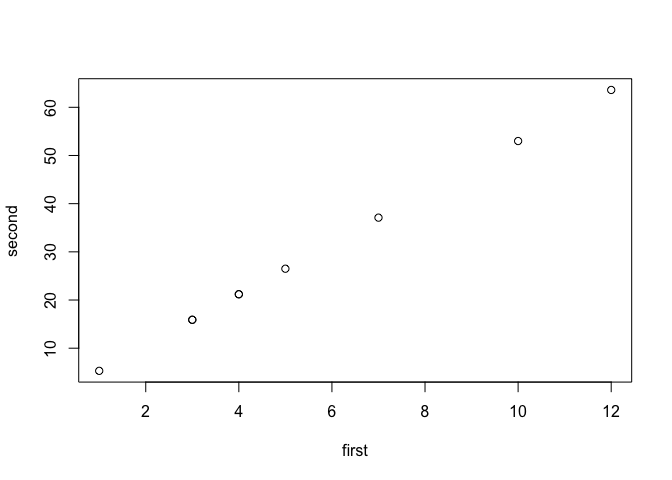
cor(first,second)## [1] 1#we could do it negatively too; the relationship would still be very strong
negative <- first *-5.3
cor(first,negative)## [1] -1error <- abs(mean(first) - mean(second))
error #the error is pretty bad. on average, the second estimate was 34 hours off from the first. no bueno## [1] 23.41111So, we’ve looked into reliability of measurement, but we still haven’t compared those subjective estimates to what actually happened. Whenever we measure anything, we want to know if the masure was reliable and if the measure was valid. Validity of a measure means it is actually measuring what you think it’s measuring. So, if we want to know about developer productivity, is it actually worth it to ask developers how long something will take? We see from the previous case that they are not reliable from estimate to estimate. Are any of their estimates actually accurate though? How good are devs at estimating how long a project will take? The following two studies report data on this, with develpers reporting in hundreds of hours how long they think a project will take to finish, against how long it actually took in reality. Both Jorgensen and Kitchenham data are plotted together. It’s very clear in the software world that underestimated projects are far more common than overestimated projects, but these mishaps are also pushed around a bit by company culture.
6.5 Effort Estimation: Accuracy and Bias
# Regression Models of Software Development Effort Estimation Accuracy and Bias
#
# Example from:
# Empirical Software Engineering using R
# Derek M. Jones
library("foreign") #just to read in the arff file
kitch=read.arff(paste0(ESEUR_dir, "data/estimation/82507128-kitchenham.arff.txt"))
jorg=read.csv(paste0(ESEUR_dir, "data/estimation/Regression-models.csv.xz"), as.is=TRUE)
data <- kitch %>%
select(First.estimate,Actual.effort)
data$Paper <- "Kitchenham"
jorg <- jorg %>%
select(Estimated.effort,Actual.effort)
jorg$Paper <- "Jorgensen"
colnames(jorg) <- c("First.estimate","Actual.effort","Paper")
data<-rbind(data,jorg)
plt = ggplot(data,aes(First.estimate/100,Actual.effort/100,color=Paper))+
scale_x_continuous(trans='log') +
scale_y_continuous(trans='log')+
ggtitle("Developer Effort Estimate vs. Actual (2 sources)",subtitle="log scale")+
xlab("Estimate")+
ylab("Actual")+
geom_point()+
geom_abline(slope=1,linetype="dashed")+
theme_bw()
plt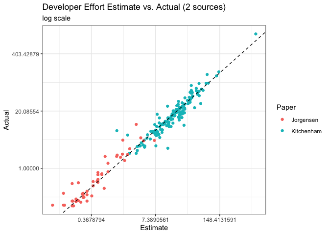
6.6 Data Visualizations: A tricky statistical tool
Remember when we took a look at the First vs. Second estimate data? We chose to plot using log/log scale, and we have just done the same for the Estimate vs. Actual data, above. Just remember that visualizations are also statistical communication tools; a plot can guide your story in ways you might not even anticipate. So for instance, in the plot above, we do see some variation around the ideal line (dashed), but it doesn’t seem drastic. We also see that the slopes are roughly similar between the Jorgensen and Kitchenham data, just by using our eye. We can say a lot of things by simply looking at the red and blue dots and their shape, but the visualization can easily prime us to agree with one hypothesis over another. So it is always important to delve into the data, and explore it on different scales, different transformations, paying attention to some of the things we have already taught; like normality testing and curve fitting. There is nothing wrong with how this data has been presented, it is just important to see how the communication changes over different forms of visualization. So let’s take a look at this plot not using a log transformation of the axes:
6.7 Without a Log Transformation
plt = ggplot(data,aes(First.estimate/100,Actual.effort/100,color=Paper))+
ggtitle("Developer Effort Estimate vs. Actual (2 sources)")+
xlab("Estimate")+
ylab("Actual")+
geom_point()+
geom_abline(slope=1,linetype="dashed")+
theme_bw()
plt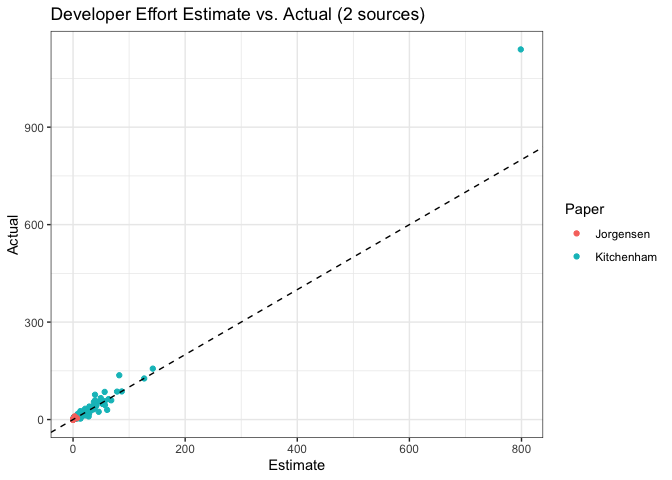
Well, there’s a significant outlier that becomes much clearer in this representation. It is still visible in the original visualization, but log scale warps the orders of magnitude, affecting the distance between points that in raw form are actually much further from each other. It’s quite difficult to see the rest of the data, and since there is no actual reason to remove that outlier (it’s still a perfectly true estimate), the only way to see the rest is to “zoom in”. The log transformed plot does not have this problem. Let’s take a look, even closer on the raw form.
6.7.1 Zoom In
plt = ggplot(data,aes(First.estimate/100,Actual.effort/100,color=Paper))+
ggtitle("Developer Effort Estimate vs. Actual (2 sources)")+
xlab("Estimate")+
ylab("Actual")+
geom_point()+
xlim(0,100)+
ylim(0,150)+
geom_abline(slope=1,linetype="dashed")+
theme_bw()
plt## Warning: Removed 3 rows containing missing values (geom_point).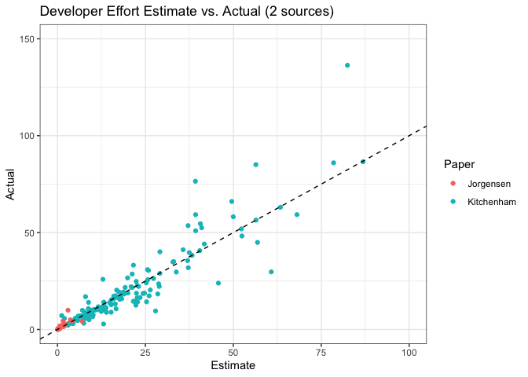
Note how the distance from the ideal line is more exaggerated now. You can more clearly see that developer estimates differed from the actual hours. We have yet another layer of “orders of magnitude” that is slightly hidden from us. Remember that the measurement we are working with is hundreds of hours. For the actual visualizations, this doesn’t matter, but for the seriousness of the actual phenomenon, it matters. In the scaled plot (hundreds of hours), the worst underestimate was 1.2 hours for a 7.2 hour job. 6 hours is just an afternoon, right? Well, the worst underestimate was an inital estimate of 121 hours, with an actual time of 718 hours. This is 5.9 times more than the original estimate, and a difference of 597 hours (maybe months, depending on how many people are working). From the original plot, and from the rescaling of the points, it was not as clear to me that some projects suffered from such delusion.
Let’s briefly look at the most overestimated project and the most underestimated project. We can actually use the histogram visualization to note that the maximum underestimate is actually pretty bad; an outlier from the rest of the distribution. In fact, there are quite a few outliers. A reminder that outliers are abnormal values with regards to the mean and the distribution, but should still be investigated carefully. Not every outlier can simply be thrown out; because they may be perfectly reasonable with regards to the underlying process. In our case, there was one project that was estimated to take 79870 hours, which then used 113930 hours to complete. This may be an outlier from this data distribution, but it is not unreasonable for the actual phenomena we are looking at. I’m sure there are plenty of projects within that range, or longer. Our initial sample just wasn’t covering larger projects. There is nothing inherent about that outlier that is not relevant to the process we are investigating: estimated time vs. actual time. Below, we see an investigation into the histogram of the ratios (spread), and the boxplot representation (horizontally aligned).
data <- data %>%
mutate(Ratio= Actual.effort/First.estimate)
data[data$Ratio == max(data$Ratio),]## First.estimate Actual.effort Paper Ratio
## 69 121 718 Kitchenham 5.933884data[data$Ratio == min(data$Ratio),]## First.estimate Actual.effort Paper Ratio
## 138 1312 286 Kitchenham 0.2179878plt1 <- data %>% select(Ratio) %>%
ggplot(aes(x="", y = Ratio)) +
geom_boxplot(fill = "lightblue", color = "black") +
coord_flip() +
theme_classic() +
xlab("") +
theme(axis.text.y=element_blank(),
axis.ticks.y=element_blank())
plt2 <- data %>% select(Ratio) %>%
ggplot() +
geom_histogram(aes(x = Ratio, y = (..count..)/sum(..count..)),
position = "identity", binwidth = 1,
fill = "lightblue", color = "black") +
ylab("Relative Frequency") +
theme_classic()
cowplot::plot_grid(plt2, plt1,
ncol = 1, rel_heights = c(2, 1),
align = 'v', axis = 'lr')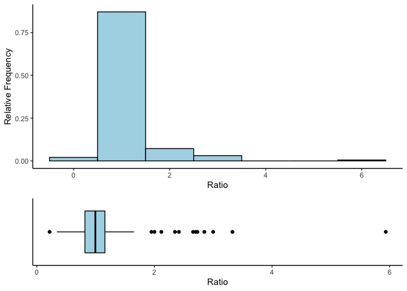
6.7.2 Zoom in on Jorgensen Data
The previous plots are still dominated by the Kitchenham data, simply because those projects were longer on average. Zooming in on just that paper, we might want to know if those two studies are actually comparable together. Judging by the histograms, after removing the outlier (just for this comparison, because we clearly know it’s origins), the spread of ratios is pretty similar between the two studies, despite the studies being different scales.
plt = ggplot(data[data$Paper=="Jorgensen",],aes(First.estimate/100,Actual.effort/100,color=Paper))+
ggtitle("Developer Effort Estimate vs. Actual (2 sources)")+
xlab("Estimate")+
ylab("Actual")+
geom_point()+
geom_abline(slope=1,linetype="dashed")+
theme_bw()
plt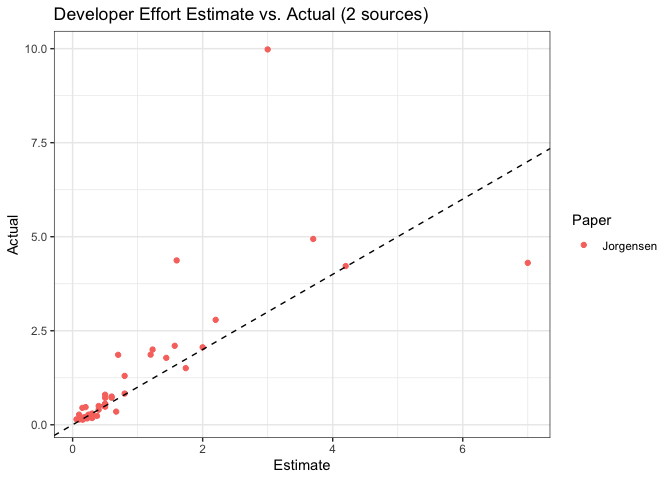
plt1 <- ggplot(data[data$Paper=="Jorgensen",],aes(Ratio))+
#geom_density(alpha=.5)+
geom_histogram(aes(y=(..count..)/sum(..count..)), position='dodge',fill="#F8766D") +
theme_bw()+
ggtitle("Jorgensen")+
ylab("Proportion")+
xlim(0,6.3)
plt2 <- ggplot(data[data$Paper=="Kitchenham",],aes(Ratio))+
#geom_density(alpha=.5)+
geom_histogram(aes(y=(..count..)/sum(..count..)), position='dodge',fill="#00BFC4") +
theme_bw()+
ggtitle("Kitchenham")+
ylab("Proportion")+
xlim(0,6.3)
cowplot::plot_grid(plt1, plt2,
ncol = 1, rel_heights = c(2, 2),
align = 'v', axis = 'lr')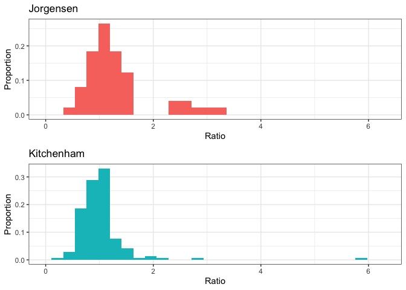
6.8 So Can We Estimate Resources or Not?
What is the biggest problem with these studies? I’ll give you a hint. Have you ever looked at a project overview, and said to yourself “hmm, seems simple enough” only to find yourself deep into a rabbit hole at 4am working on configuring some weird dependencies to allow you to do the nine other tasks you have to do before you can do the first thing for the project? How about the other way around; have you looked at a project spec and panicked, knowing it will take you forever until you realize that the package is actually pretty simple and you can probably finish this on time if the stars align just right? What I’m getting at is: project estimation changes as you gain new information. If I were to ask you how long something would take before you’d really started to try it, there’s a good chance your estimation will be inaccurate. But what about when you’ve spent countless hours and are actually almost done? Will you be able to tell me how much you actually have left? Once you’ve worked with something for a while, you should probably get a better gauge of how long those types of problems take to complete. This concept is referred to as the cone of uncertainty. The idea is that as you get new information about a project, you can make more accurate judgments about the time to completion on that project. That makes some intuitive sense, but keep in mind that by definition you will converge to 1x the project length by the end, because “it is what it is”. Take a moment to discuss with a partner (or your cat, whatever) about this concept.
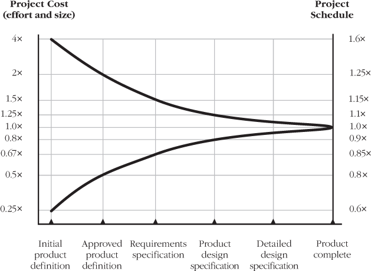
http://citeseerx.ist.psu.edu/viewdoc/download?doi=10.1.1.630.6667&rep=rep1&type=pdf
https://github.com/Derek-Jones/ESEUR-code-data/blob/master/projects/Little-cone.R
6.9 Estimate Updating
What if you were to take multiple estimates as the project progressed? It makes sense that perhaps you would get a better estimate as the project became closer and closer to finishing.
# Project Code,Week End Date,Target RelDate,Env,Plan,Dev,Stab,Mob,Adj Week,Est EndDate,First Est,Actual Release,Start Date,X,Absolute Ratio,Relative Ratio,Update,Absolute ratio without factor 2,,Eind project,Oppervlakte,Counter,Som oppervlakte,EQF all,EQF end,Eind project factor 2,Oppervlakte factor 2,Counter factor 2,Som oppervlakte factor 2,EQF all factor 2,EQF end factor 2
# 1,12/01/00,03/01/01,C,C,I,,,12/01/00,03/01/01,03/01/01,08/22/01,12/01/00,0.00,0.6770156819,2.95,1,0.33851,,0,0.0085951791,1,0,4235.7284514877,0,0,0.0176034663,1,0,#DIV/0!,0
est=read.csv(paste0(ESEUR_dir, "data/Little06.csv.xz"), as.is=TRUE)
est$Week.End.Date=as.Date(est$Week.End.Date, format="%m/%d/%y")
est$Target.RelDate=as.Date(est$Target.RelDate, format="%m/%d/%y")
est$Adj.Week=as.Date(est$Adj.Week, format="%m/%d/%y")
est$Est.EndDate=as.Date(est$Est.EndDate, format="%m/%d/%y")
est$First.Est=as.Date(est$First.Est, format="%m/%d/%y")
est$Actual.Release=as.Date(est$Actual.Release, format="%m/%d/%y")
est$Start.Date=as.Date(est$Start.Date, format="%m/%d/%y")
est$est_duration=est$First.Est-est$Start.Date
mk_target_unique=function(df)
{
# The same Target release date might be estimated again after a change of date,
# so duplicated cannot be used. rle only works with atomic types
t=cumsum(c(1, head(rle(as.integer(df$Target.RelDate))$lengths, n=-1)))
return(df[t, ])
}
target_summary=function(df)
{
return(data.frame(est_duration=df$est_duration[1], num_reest=nrow(df)))
}
u_est=ddply(est, .(Project.Code), mk_target_unique)
t_sum=ddply(u_est, .(Project.Code), target_summary)
ggplot(t_sum,aes(est_duration,num_reest))+
geom_point(color="#00BFC4")+
xlab("Initial estimated duration (days)")+
ylab("Number of estimates")+
stat_smooth(method="loess",color="black")+
theme_bw()## Don't know how to automatically pick scale for object of type difftime. Defaulting to continuous.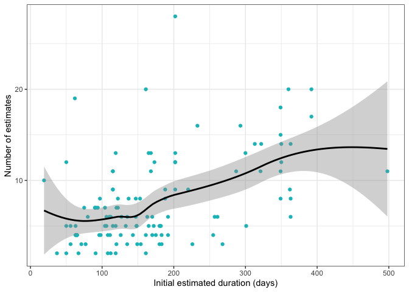
pal_col=rainbow(2)
mk_target_unique=function(df)
{
# The same Target release date might be estimated again after a change of date,
# so duplicated cannot be used. rle only works with atomic types
t=cumsum(c(1, head(rle(as.integer(df$Target.RelDate))$lengths, n=-1)))
return(df[t, ])
}
est$percent_comp=100*as.integer(est$Week.End.Date-est$Start.Date)/as.integer(est$Actual.Release-est$Start.Date)
est$AE_ratio=as.integer(est$Actual.Release-est$Start.Date)/as.integer(est$Target.RelDate-est$Start.Date)
est=subset(est, Week.End.Date <= Actual.Release)
u_est=ddply(est, .(Project.Code), mk_target_unique)
x_vals=seq(from=10, to=100,by=((100 - 10)/(length(u_est$percent_comp) - 1))) #just some slight coercing so we can draw our lines!
ggplot(u_est,aes(percent_comp,AE_ratio))+
geom_point(color="#00BFC4")+
geom_line(aes(x_vals,100/x_vals))+
geom_hline(yintercept=1)+
xlab("Percentage completed")+
ylab("Actual/Estimated")+
theme_bw()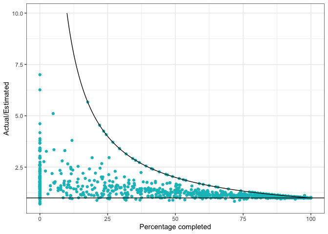